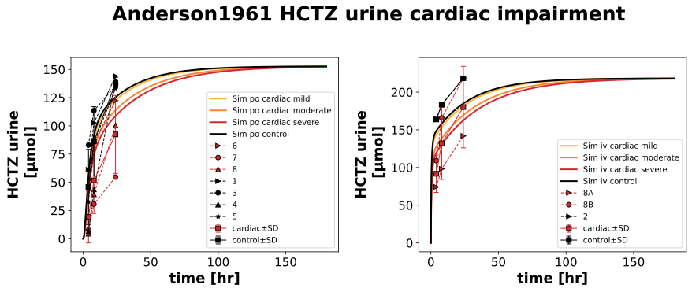
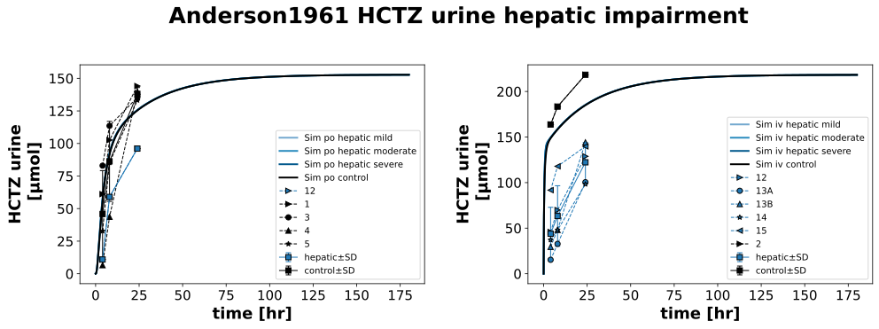
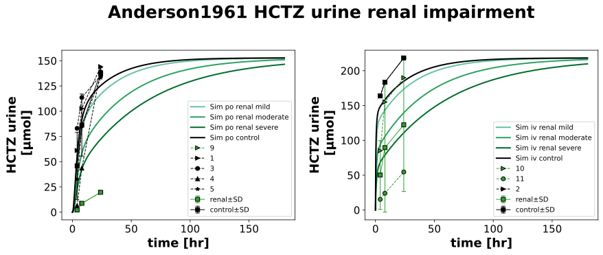
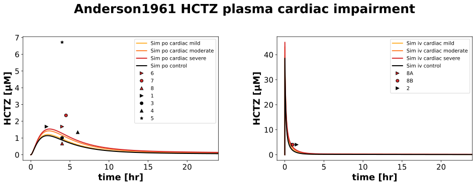
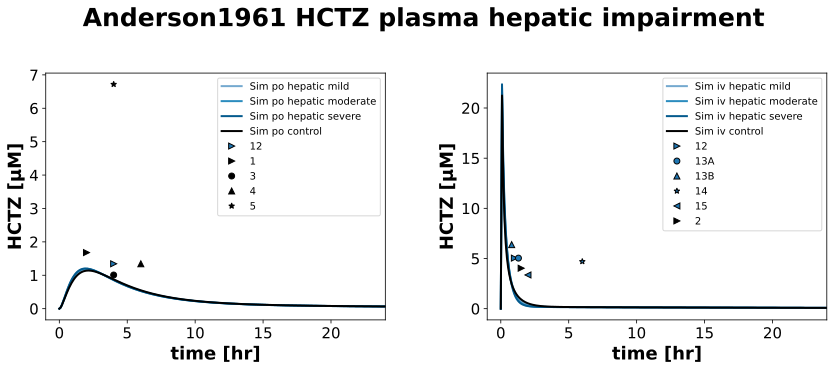
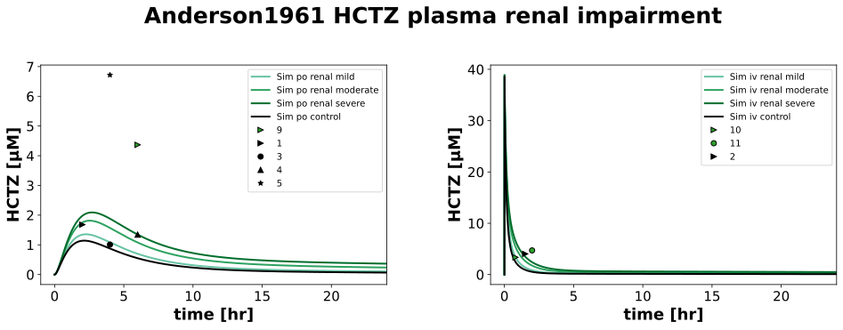

Overview
Models
| model | source |
|---|---|
| model | hctz_body_flat.xml |
Datasets
Figures (6)












Code
"""Simulation experiment of the study Anderson1961."""
from typing import ClassVar, override
import pandas as pd
from pkpdsim.metadata import (
ApplicationForm,
Coadministration,
Dosing,
Fasting,
Health,
PKPDMappingMetaData,
Route,
Tissue,
)
from sbmlsim import Q
from sbmlsim.data import DataSet
from sbmlsim.fit import FitData, FitMapping
from sbmlsim.plot import Axis, Figure
from sbmlsim.simulation import Simulation
from pkdb_models.models.hctz import MODEL
from pkdb_models.models.hctz.experiments.base_experiment import (
HCTZSimulationExperiment,
)
class Anderson1961(HCTZSimulationExperiment):
"""Simulation experiment of Anderson1961.
C14-labeled hydrochlorothiazide was administered orally and intravenously to 5 healthy controls
and 10 patients with cardiac, renal or hepatic disease (19 studies, Table).
"""
# One 50 mg tablet was given with the labelled drug in capsules, "the entire
# dose (65 mg.)" (p. 738); the intravenous dose was the labelled drug in 5 ml
# of saline added to 50 mg of lyophilized drug, "orally or intravenously, in
# doses of 65 mg." (Summary). The urine of the Table is a percentage of the
# administered dose, the amounts of the data are of 65 mg.
dose = 65 # mg
routes: ClassVar[list[str]] = [
"po",
"iv",
]
markers: ClassVar[list[str]] = [">", "o", "^", "*", "<"]
severities: ClassVar[list[str]] = ["mild", "moderate", "severe"]
colors: ClassVar[dict[str, str]] = {
"control": "black",
"cardiac": "tab:red",
"cardiac mild": HCTZSimulationExperiment.cardiac_colors[
"Mild cardiac impairment"
],
"cardiac moderate": HCTZSimulationExperiment.cardiac_colors[
"Moderate cardiac impairment"
],
"cardiac severe": HCTZSimulationExperiment.cardiac_colors[
"Severe cardiac impairment"
],
"renal": "tab:green",
"renal mild": HCTZSimulationExperiment.renal_colors["Mild renal impairment"],
"renal moderate": HCTZSimulationExperiment.renal_colors[
"Moderate renal impairment"
],
"renal severe": HCTZSimulationExperiment.renal_colors[
"Severe renal impairment"
],
"hepatic": "tab:blue",
"hepatic mild": HCTZSimulationExperiment.cirrhosis_colors["Mild cirrhosis"],
"hepatic moderate": HCTZSimulationExperiment.cirrhosis_colors[
"Moderate cirrhosis"
],
"hepatic severe": HCTZSimulationExperiment.cirrhosis_colors["Severe cirrhosis"],
}
patients: ClassVar[dict[str, dict[str, list[str]]]] = {
"po": {
"control": ["1", "3", "4", "5"],
"cardiac": ["6", "7", "8"],
"renal": ["9"],
"hepatic": ["12"],
},
"iv": {
"control": ["2"],
"cardiac": ["8A", "8B"],
"renal": ["10", "11"],
"hepatic": ["12", "13A", "13B", "14", "15"],
},
}
#: the condition of every study of the Table by route and subject of the
#: data: the simulation (`control` or the disease and the class of its
#: impairment) and the health of the patient. No clearance or cardiac
#: output was measured, a class is the description of the case.
cases: ClassVar[dict[str, dict[str, tuple[str, Health]]]] = {
"po": {
# Group 1, in good health or convalescing from pneumococcal pneumonia
"1": ("control", Health.HEALTHY),
"3": ("control", Health.HEALTHY),
"4": ("control", Health.HEALTHY),
"5": ("control", Health.HEALTHY),
# Group 2, congestive heart failure, two of the three patients with
# gross edema and ascites
"6": ("cardiac_severe", Health.HEART_FAILURE),
"7": ("cardiac_severe", Health.HEART_FAILURE),
# case 8A, oral, in congestive failure
"8": ("cardiac_severe", Health.HEART_FAILURE),
# Kimmelstiel-Wilson syndrome, "the renal excretion was extremely
# low" (Comment), 9 % of the dose in 24 hr
"9": ("renal_severe", Health.RENAL_IMPAIRMENT),
# case 12A, Laennec's cirrhosis with jaundice, ascites and edema
"12": ("hepatic_severe", Health.CIRRHOSIS),
},
"iv": {
"2": ("control", Health.HEALTHY),
# case 8B of the publication, intravenous in congestive failure,
# 65 % of the dose in 24 hr
"8A": ("cardiac_severe", Health.HEART_FAILURE),
# case 8C of the publication, "Compensated", 10 days later after
# "becoming free of edema and losing 20 pounds in weight", 100 % of
# the dose in 24 hr
"8B": ("cardiac_mild", Health.HEART_FAILURE),
# proteinuria with generalized edema "without other evidence of
# renal disease", "renal excretion of radioactivity was not
# impaired" (Comment): a normal renal function. The health is the
# group of the publication, renal disease; there is no member for
# a proteinuria
"10": ("control", Health.RENAL_IMPAIRMENT),
# Kimmelstiel-Wilson syndrome, 25 % of the dose in 24 hr
"11": ("renal_severe", Health.RENAL_IMPAIRMENT),
# case 12B, Laennec's cirrhosis
"12": ("hepatic_severe", Health.CIRRHOSIS),
# lupus erythematosus with jaundice, ascites and edema, before (A)
# and after (B) 10 days of adrenocorticosteroids, which improved
# the renal function (Comment). Not a cirrhosis, and the renal
# function is not given: simulated without impairment
"13A": ("control", Health.HEPATIC_IMPAIRMENT),
"13B": ("control", Health.HEPATIC_IMPAIRMENT),
# Laennec's cirrhosis
"14": ("hepatic_severe", Health.CIRRHOSIS),
"15": ("hepatic_severe", Health.CIRRHOSIS),
},
}
#: the condition of the means of the groups (Tab1A): the class of the
#: disease group, which in the intravenous groups mixes conditions (8B and
#: 8C of case 8, proteinuria and Kimmelstiel-Wilson, cirrhosis and lupus)
groups: ClassVar[dict[str, tuple[str, Health]]] = {
"control": ("control", Health.HEALTHY),
"cardiac": ("cardiac_severe", Health.HEART_FAILURE),
"renal": ("renal_severe", Health.RENAL_IMPAIRMENT),
"hepatic": ("hepatic_severe", Health.HEPATIC_IMPAIRMENT),
}
interventions: ClassVar[list[str]] = ["control", "cardiac", "renal", "hepatic"]
diseases: ClassVar[list[str]] = ["cardiac", "hepatic", "renal"]
@override
def datasets(self) -> dict[str, DataSet]:
dsets = {}
for fig_id in ["Tab1", "Tab1A", "Tab1B"]:
df: pd.DataFrame = self.load_dataframe(fig_id)
for label, df_label in df.groupby("label"):
label = str(label)
dset = DataSet.from_df(df_label, self.ureg)
if label.startswith("amount"):
if fig_id == "Tab1":
dset.unit_conversion("value", 1 / self.Mr.hctz)
if fig_id == "Tab1A":
dset.unit_conversion("mean", 1 / self.Mr.hctz)
elif label.startswith("cmax"):
if fig_id == "Tab1B":
dset.unit_conversion("value", 1 / self.Mr.hctz)
if fig_id == "Tab1A":
dset.unit_conversion("mean", 1 / self.Mr.hctz)
dsets[self.to_sid(label)] = dset
return dsets
@override
def simulations(self) -> dict[str, Simulation]:
simulations = {}
for route in self.routes:
for intervention in self.interventions:
for severity in self.severities:
if intervention == "control" and severity != "mild":
continue
if intervention == "control":
changes = {}
elif intervention == "cardiac":
changes = {
"f_cardiac_function": Q(
self.cardiac_map[
f"{severity.title()} cardiac impairment"
]
),
# FIXME: handle reduced fraction absorbed ?!
# "GU__F_hctz_abs": Q(0.427, "dimensionless"), # assumption from recovery [Beermann1979]
# "GU__F_hctz_abs": Q(60 / 101 * 0.75, "dimensionless"),
}
elif intervention == "renal":
changes = {
"f_renal_function": Q(
self.renal_map[f"{severity.title()} renal impairment"]
)
}
elif intervention == "hepatic":
changes = {
"f_cirrhosis": Q(
self.cirrhosis_map[f"{severity.title()} cirrhosis"]
)
}
else:
raise ValueError(f"{intervention} is not a valid intervention")
if intervention == "control":
label = intervention
else:
label = f"{intervention}_{severity}"
simulations[self.to_sid(f"hctz_{route}{self.dose}_{label}")] = (
Simulation(
time_unit="hr",
end=180,
preinit_changes={
**self.default_changes(),
f"{route.upper()}DOSE_hctz": Q(self.dose, "mg"),
**changes,
},
)
)
return simulations
@override
def fit_mappings(self) -> dict[str, FitMapping]:
mappings = {}
for route in self.routes:
for disease in self.diseases:
for subset in [disease, "control"]:
# mean data HCTZ Urine
condition, health = self.groups[subset]
mappings[self.to_sid(f"fm_amount_HCTZ{route}_{subset}")] = (
FitMapping(
self,
reference=FitData(
self,
dataset=self.to_sid(f"amount_HCTZ{route}_{subset}"),
xid="time",
yid="mean",
yid_sd="mean_sd",
count="count",
),
observable=FitData(
self,
task=self._task(route, condition),
xid="time",
yid="Aurine_hctz",
),
metadata=self._metadata(route, Tissue.URINE, health),
)
)
# individual data HCTZ Urine and Plasma
for subject in self.patients[route][subset]:
condition, health = self.cases[route][subject]
for key, yid, tissue in [
("amount", "Aurine_hctz", Tissue.URINE),
("cmax", "[Cve_hctz]", Tissue.PLASMA),
]:
mappings[self.to_sid(f"fm_{key}_HCTZ{route}_{subject}")] = (
FitMapping(
self,
reference=FitData(
self,
dataset=self.to_sid(
f"{key}_HCTZ{route}_{subject}"
),
xid="time",
yid="value",
yid_sd=None,
count="count",
),
observable=FitData(
self,
task=self._task(route, condition),
xid="time",
yid=yid,
),
metadata=self._metadata(route, tissue, health),
)
)
return mappings
def _task(self, route: str, condition: str) -> str:
"""Get the task of a route and a condition (`control`, `renal_severe`)."""
return self.to_sid(f"task_hctz_{route}{self.dose}_{condition}")
@staticmethod
def _metadata(route: str, tissue: Tissue, health: Health) -> PKPDMappingMetaData:
"""Get the metadata of a mapping.
The labelled drug, which is what was measured, was given orally in
gelatin capsules together with the tablet (p. 738).
"""
return PKPDMappingMetaData(
tissue=tissue,
application_form=ApplicationForm.CAPSULE
if route == "po"
else ApplicationForm.SOLUTION,
route=Route.PO if route == "po" else Route.IV,
dosing=Dosing.SINGLE,
health=health,
fasting=Fasting.NR,
coadministration=Coadministration.NONE,
)
@override
def figures(self) -> dict[str, Figure]:
return {
**self._figure_Tab1urine(),
**self._figure_Tab1plasma(),
# **self.figure_Tab1_hep_ren(),
}
def _figure_Tab1urine(self) -> dict[str, Figure]:
figures = {}
for disease in self.diseases:
fig = Figure(
experiment=self,
sid=self.to_sid(f"{disease} urine"),
num_cols=2,
name=f"{self.__class__.__name__} HCTZ urine {disease} impairment",
)
plots = fig.create_plots(
xaxis=Axis(self.label_time, unit="hr"),
yaxis=Axis(self.label_hctz_urine, unit=self.unit_hctz_urine),
legend=True,
)
for kr, route in enumerate(self.routes):
# simulation
for severity in self.severities:
plots[kr].add_data(
task=self.to_sid(
f"task_hctz_{route}{self.dose}_{disease}_{severity}"
),
xid="time",
yid="Aurine_hctz",
label=f"Sim {route} {disease} {severity}",
color=self.colors[f"{disease} {severity}"],
)
plots[kr].add_data(
task=self.to_sid(f"task_hctz_{route}{self.dose}_control"),
xid="time",
yid="Aurine_hctz",
label=f"Sim {route} control",
color=self.colors["control"],
)
# mean data
for subset in [disease, "control"]:
plots[kr].add_data(
dataset=self.to_sid(f"amount_HCTZ{route}_{subset}"),
xid="time",
yid="mean",
yid_sd="mean_sd",
label=subset,
linestyle="-",
color=self.colors[subset],
)
# individual data
for subset in [disease, "control"]:
for ks, subject in enumerate(self.patients[route][subset]):
plots[kr].add_data(
dataset=self.to_sid(f"amount_HCTZ{route}_{subject}"),
xid="time",
yid="value",
yid_sd=None,
label=f"{subject}",
marker=self.markers[ks],
color=self.colors[subset],
)
figures[self.to_sid(f"{disease} urine")] = fig
return figures
def _figure_Tab1plasma(self) -> dict[str, Figure]:
figures = {}
for disease in self.diseases:
fig = Figure(
experiment=self,
sid=self.to_sid(f"{disease} plasma"),
num_cols=2,
name=f"{self.__class__.__name__} HCTZ plasma {disease} impairment",
)
plots = fig.create_plots(
xaxis=Axis(self.label_time, unit="hr", min=-1, max=24),
yaxis=Axis(self.label_hctz, unit=self.unit_hctz),
legend=True,
)
for kr, route in enumerate(self.routes):
# simulation
for severity in self.severities:
plots[kr].add_data(
task=self.to_sid(
f"task_hctz_{route}{self.dose}_{disease}_{severity}"
),
xid="time",
yid="[Cve_hctz]",
label=f"Sim {route} {disease} {severity}",
color=self.colors[f"{disease} {severity}"],
)
plots[kr].add_data(
task=self.to_sid(f"task_hctz_{route}{self.dose}_control"),
xid="time",
yid="[Cve_hctz]",
label=f"Sim {route} control",
color=self.colors["control"],
)
# individual data
for subset in [disease, "control"]:
for ks, subject in enumerate(self.patients[route][subset]):
plots[kr].add_data(
dataset=self.to_sid(f"cmax_HCTZ{route}_{subject}"),
xid="time",
yid="value",
yid_sd=None,
label=f"{subject}",
marker=self.markers[ks],
color=self.colors[subset],
linestyle="",
)
figures[self.to_sid(f"{disease} plasma")] = fig
return figures
if __name__ == "__main__":
MODEL.run_experiments(Anderson1961, output_dir=Anderson1961.__name__)